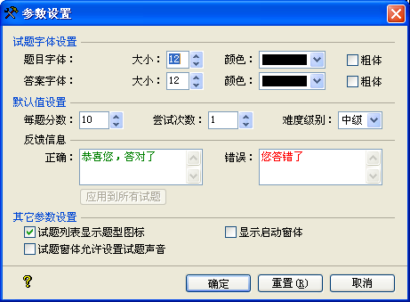

| 参数设置 |
|
参数设置页面如下图所示：  此页面设置了设计试题的一些默认设置，及试题大师的一些设置： Ø 试题字体设置 此功能设置了您建立一个试题时，题目字体、颜色及答案字体、颜色 、是否显示为粗体等。 题目字体：您可以在这里设定试题标题的字号大小及颜色、是否粗体。字号值为8至24，颜色可以设为自定义颜色(点击第一项)或系统颜色。 答案字体：您可以在这里设定试题答案的字号大小及颜色、是否粗体。字号值为8至24，颜色可以设为自定义颜色(点击第一项)或系统颜色。 Ø 默认值设置 此功能设置了您用添加试题添加一道试题时，题一些参数据的初始值。 每题分数：默认值为10，您可以在0至100的范围内自定义。 尝试次数：您可以在这里设定每题的默认尝试次数，初始值为1，您可以在1至9之间自定义。 难度级别：此处定义难度级别默认值，初始级别为[中级]。 反馈信息：这里设定新建题型的默认反馈信息。若试题中已存在题目，您可以点击[应用到所有试题]，以应用设定的反馈信息，到所有已存在的试题中。 Ø 其它参数设置 试题列表显示题型图标：此选项决定在主窗体试题列表的前面是否显示当前试题类型的图标。 显示启动窗体：此选项决定试题大师程序启动时，是否显示启动窗体。 试题窗体允许设置试题声音：当您勾选此选项，则在您添加或者编辑一个试题时，您可以设置题的声音。在生成的试题中，您做到有声音的试题时，声音就会播放。 |